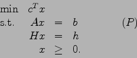
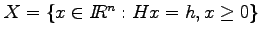
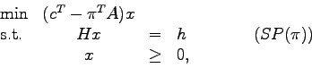
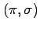
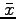
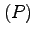
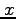

Due: Friday, March 3, 2006.
Dantzig-Wolfe decomposition solves the linear programming problem

The procedure
takes
,
and solves subproblems of the form

where  is the current dual solution to the Master Problem.
- When using Dantzig-Wolfe decomposition,
assume the current subproblem has an optimal solution  with value
. Can you give a lower bound on the optimal value of ?
What does your lower bound become if is dual feasible?
- Suppose has been solved using Dantzig-Wolfe decomposition.
How would you find
the optimal dual solution to the original problem ?
- Given an optimal basic feasible solution to the Master Problem, give an example to
show that the corresponding
feasible point  might not be a basic feasible solution for (P).
How would you find an optimal basic feasible solution to (P), in the general case?
- The Project and Presentation:
Along with your solutions to this homework, hand in a brief description of
what you would like to do for the project and presentation part of this course.
As stated in the course outline:
The presentation will be of either one or two recent papers in interior point methods or a research project. You will also have to write a summary/analysis of the paper(s) or project. You can work in pairs for the presentation part of the course. You may discuss your paper(s) with other people and with me, but your writeup must be your own work. The presentations will take place in exam week during the time-slot for the final exam.
The project can arise from your own research, or I can suggest a computational
project.
John E. Mitchell
2006-02-23